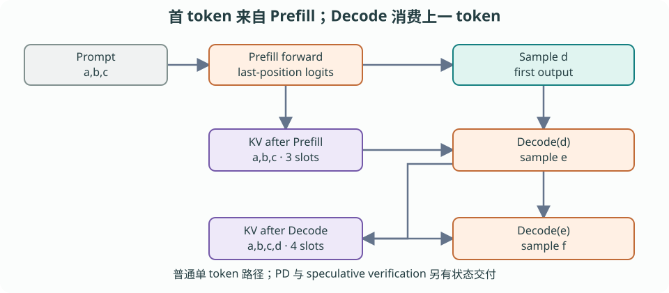
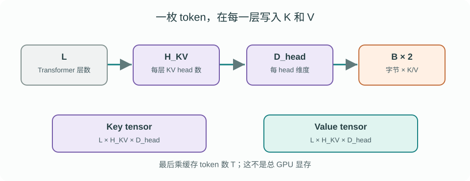

第 01 章 · 推理基础
从一条请求到一串 token：SGLang 的基础计算路径
先看清 Prefill、Decode、KV Cache 的真实依赖，再讨论缓存复用与调度优化。
同一个 Transformer 可以完成「读入 Prompt」与「接着输出一个 token」两种形态不同的工作。推理引擎的第一份任务不是发明新的模型，而是在每轮计算之间保存正确的状态，并安排哪些请求进入 GPU。
本章结束后，你应该能
- 区分 token、Prefill、Decode，以及第一次可见输出与后续输出的延迟。
- 使用模型的 KV head 数与 dtype 推导缓存的理论内存。
- 沿着入口、调度器、模型执行、token 输出定位 SGLang 的职责边界。
1. 从一个反例开始：为什么不能每次读完整段历史？
设用户输入序列为 [x₀, x₁, …, xₙ]。模型预测第一个输出 token y₀，随后用已有上下文预测 y₁。若每轮都重新计算历史 token 的 Key/Value 投影，会重复承担历史部分的开销。标准自回归推理通常缓存各层历史 K/V；下一步只需为新增位置构建新的 K/V，并用当前 Query 读取历史 K/V。
注意：Decode 不等于只看最后一个 token。新的 Query 对完整可见历史的 K/V 做注意力；只是历史位置的 K/V 不必重投影。token 不是一个固定的汉字或单词，而是 tokenizer 定义的离散 ID。
2. 画出实际依赖：Prefill → 缓存 → Decode
Prefill 处理 Prompt 中多个位置，写入层内 K/V 并由最后一个有效输入位置的 logits 采样首个输出 token。普通 Decode 以刚生成的 token 为输入，计算该位置的 K/V，并采样再下一个 token；输出 token 与已写入 KV 的位置数在步边界可以相差一。Decode 在逐步生成时使用缓存，追加新 K/V，直到遇到停止条件。它们属于同一请求的逻辑阶段，后文的 P/D Disaggregation 才是跨实例部署技术。

| 性质 | Prefill | Decode |
|---|---|---|
| 主要输入 | Prompt token 序列 | 新增 token 位置与历史 K/V |
| 主要输出 | 首次预测所需结果 + KV | 当前下一 token + 新 KV |
| 并行特性 | 多个输入位置可在单次 forward 中并行 | 同一请求相邻生成步存在依赖 |
| 典型关注 | 长输入处理、TTFT | 反复小步、ITL/TPOT |
3. 推导每个 token 的 KV Cache 预算
以下针对普通 Transformer MHA/GQA 缓存：设层数为 L、KV heads 数为 H_KV、每 head 维度为 D、已缓存 token 数为 T、每元素字节数为 B。每层需要 Key 和 Value 两份。
例如设 L=32、H_KV=8、D=128、T=8192、B=2 bytes：每 token 2 × 32 × 8 × 128 × 2 = 131072 bytes = 128 KiB，总约 1 GiB。这是从给定形状推导出来的教学值，不是 SGLang 实测总显存。假设 K/V 使用相同维度与 dtype，且统计所有这些层的有效 payload；每 GPU 按实际层和 KV head 分片核算，不能盲目除 TP（可能存在复制）；页尾、allocator、量化 scale、MLA 与 recurrent state 另计。

4. 源码从哪里读？不要把职责压成一个 box
读源码应先把网络入口、请求格式与 token 化、调度、模型执行、返回 token 文本分开。SGLang 源码中的 scheduler.py 是请求分组、预算与执行协调的关键入口；模型执行和注意力后端另有分层实现。不同版本的进程边界、模型族和异构设备路径可能变动。
教学概念图（不是可调用的生产函数）：
request -> tokenize -> waiting queue
scheduler: select admissible requests + allocate KV
model executor: prefill or decode forward
sampling: choose next token -> stream and update state
repeat until finish reason源码阅读原则：先理解 request 和 batch 的状态，再沿 batch forward 找模型执行与缓存映射，不要在还没有区分调度与算子时就直接钻进 GPU kernel。
固定快照调用链：Scheduler normal / overlap event loop → ModelRunner.sample。这里是普通自回归生成；分离、speculation、embedding 另有路径。
5. TTFT、ITL 与吞吐率到底衡量什么？
TTFT（Time to First Token）包含入口处理、排队、Prefill 与返回首 token 的路径。ITL（Inter-Token Latency）通常测量相邻输出 token 的时间间隔，TPOT的统计口径要与报告定义一起给出。完成时间还包括输出长度的影响。
增加动态 batch 可能提高 GPU 利用率与输出 token 吞吐量，却同时增加 KV 压力与尾部延迟。只给 tokens/s 而不报请求到达率、输入/输出长度分布、模型、硬件、缓存热度和失败率，无法比较两个系统。
测量边界：固定快照的 production metrics 将 streaming TTFT 截止于 detokenization 后首批输出（可能没有可打印文本），non-streaming 截止于 scheduler 产生首 token。不要将首个可见字符与内部首 token 或完整 HTTP 响应混为一谈。
6. 交互：观察同一请求的三个时刻
下面选择的状态会改变新处理的 token 与缓存变化；具体 token 文字仅为 toy 模型，不是在 GPU 上运行。
请求阶段与缓存增量
Prefill：处理输入 [a,b,c]，写入3个位置的 K/V，从最后位置 logits 采样首个输出 d。
Decode 第 1 轮：输入 d，读取 a/b/c 的 K/V，追加 d 的 K/V（共4个位置），采样下一 token e。
Decode 第 2 轮：输入 e，读取 a/b/c/d 的 K/V，追加 e 的 K/V（共5个位置），采样下一 token f。
如果切换到第二轮后，图示仍声称“重算全部 Prompt 的投影”，就是错误的依赖图。
7. 理解适用边界与反例
上述公式不等于所有模型的精确缓存预算：MLA、滑动窗口、混合注意力、KV 压缩、量化或分页布局都可能改变形状和分配规则。分布式并行还会改变各设备的分片视图。某请求如果没有生成可见 token，TTFT 的统计处理也应在基准协议中明确规定。
本章没有运行 SGLang 推理服务或测 GPU 延迟。进入下一章时，请带着一个问题：两个请求都以相同的系统提示词开头，能否避免对这段前缀重复进行 Prefill？
参考资料与版本边界
论文论述属于 2024 年原始设计；源码链接固定到 SGLang 0a8693fbe3a2（2026-11-23 检索），不自动代表其他发行版。本文没有宣称完成上游 GPU 级基准复现。